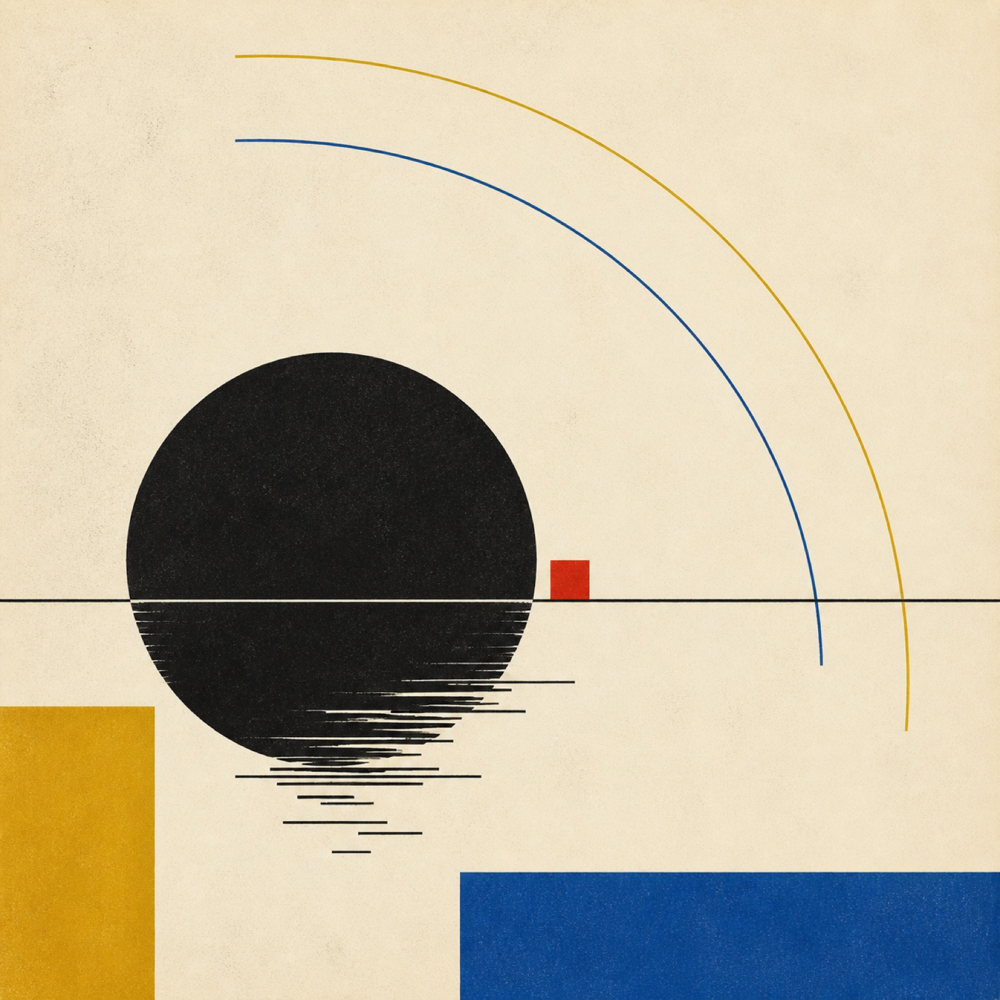

001

Soundscape · Electronic composition
Utopia
Based on Wisława Szymborska’s poem, the piece explores an abandoned island through sound—moving from dynamic processing into harmonic contrast while holding a continuous musical stream.
DSPoem project · 04:05
00:0004:05